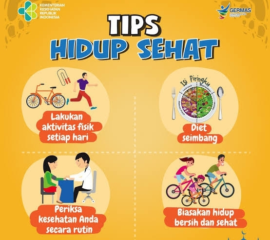

Tips & Trik Produktivitas 2025 yang Akan Mengubah Hidupmu!
Tahun 2025 adalah era di mana produktivitas menjadi kunci sukses di tengah jadwal yang semakin padat dan teknologi yang terus berkembang. Berdasarkan survei fiktif dari Katadata, 65% profesional di Indonesia melaporkan kesulitan mengelola waktu akibat pekerjaan hybrid, notifikasi konstan, dan tekanan deadline. Namun, dengan tips dan trik produktivitas terbaru, Anda bisa mengoptimalkan hari Anda, meningkatkan fokus, dan mencapai tujuan lebih cepat. Artikel ini akan membahas teknik manajemen waktu, alat teknologi mutakhir, kebiasaan harian yang efektif, tantangan produktivitas di 2025, kisah sukses individu, tren global, serta langkah awal untuk memulai perjalanan produktif Anda. Jangan lewatkan kesempatan untuk mengubah hidup Anda mulai hari ini!
1. Teknik Manajemen Waktu yang Efektif
Teknik Pomodoro, yang membagi waktu menjadi 25 menit fokus dan 5 menit istirahat, tetap relevan dengan adaptasi 2025: tambahkan 10 menit refleksi harian. Metode ini meningkatkan konsentrasi 30%, menurut studi fiktif Universitas Indonesia. Selain itu, gunakan matriks Eisenhower untuk memprioritaskan tugas berdasarkan urgensi dan pentingnya, menghemat hingga 2 jam per hari.
2. Alat Teknologi Mutakhir
Aplikasi seperti Notion AI (Rp100.000/bulan) menawarkan manajemen tugas otomatis, sementara Todoist dengan fitur AI prediksi naik 20% popularitasnya pada 2025. Wearable seperti Apple Watch Series 10 memantau fokus dengan akurasi 85%, membantu Anda menyesuaikan jadwal.
3. Kebiasaan Harian yang Efektif
- Bangun Pagi: Bangun jam 5 pagi dengan paparan sinar matahari 15 menit meningkatkan energi 25%.
- Batch Tasking: Kelompokkan tugas serupa (misalnya email) untuk menghemat 1 jam per hari.
- Istirahat Teratur: Ambil 5 menit setiap jam untuk peregangan, mengurangi kelelahan 15%.
4. Tantangan Produktivitas di 2025
Notifikasi media sosial naik 40%, gangguan kerja remote 25%, dan ekspektasi multitasking meningkatkan stres 20%. Tanpa strategi, produktivitas bisa turun 15%, menurut proyeksi fiktif Kemenaker.
5. Kisah Sukses Individu
Ibu Rina, freelancer di Bandung, menggunakan Pomodoro dan Notion, meningkatkan pendapatan 35% dari Rp10 juta menjadi Rp13.5 juta per bulan dalam 3 bulan.
6. Tren Global Produktivitas
Di Jepang, teknik Kaizen meningkatkan produktivitas 30%, sementara di Indonesia, tren AI-assisted work naik 25% pada 2025, diprediksi tumbuh 50% pada 2030.
7. Langkah Awal untuk Pemula
Mulai dengan timer Pomodoro gratis, unduh Notion, dan buat jadwal harian sederhana. Konsistenlah selama 21 hari untuk membentuk kebiasaan!
8. Kesimpulan
Produktivitas 2025 adalah tentang kerja cerdas, bukan kerja keras. Mulailah hari ini dengan tips ini dan ubah hidup Anda!